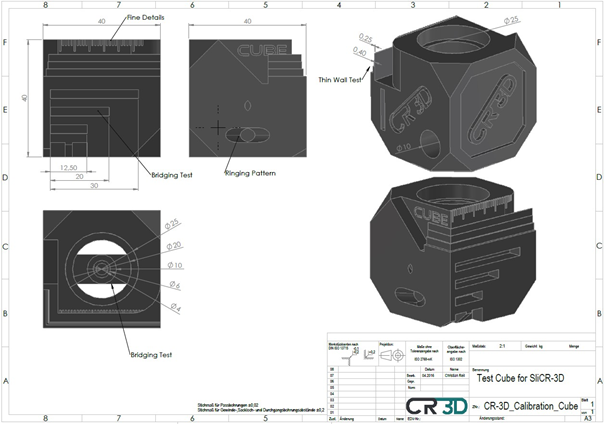
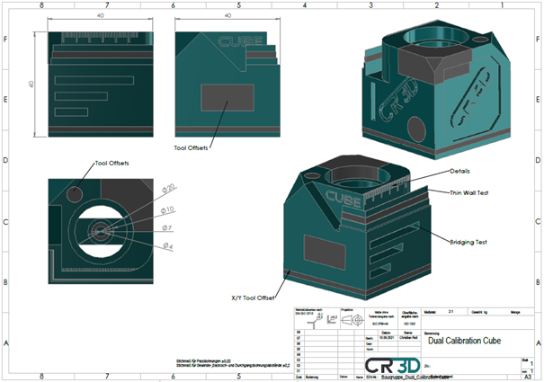
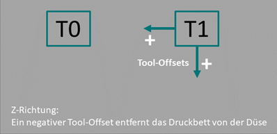

CR-3D Würfel Kalibrierung
| Benötigt: | Nichts |
CR-3D Würfel Kalibrierung |
||
|
Auf dieser Seite können Sie den CR-3D Kalibrierwürfel drucken. Er ist nützlich, um zu prüfen, wie genau Ihr Drucker arbeitet, und um verschiedene Einstellungen zu kalibrieren. Wählen Sie zuerst, ob Sie die Single oder Dual Cube Version verwenden möchten.

Mit dem Single Extruder Würfel können Sie viele verschiedene Parameter prüfen. Es gibt zahlreiche Möglichkeiten, die Maßhaltigkeit zu kontrollieren: Bohrungen, Öffnungen, Außenmaße und vieles mehr.
Außerdem gibt es Bereiche, in denen Bridging erforderlich ist. Dafür sind verschiedene Brückenlängen integriert, damit sich das Verhalten gut beurteilen lässt.
Zusätzlich enthält das Modell feine Details und dünne Wände, um die Präzision des Druckers zu testen.
Darüber hinaus wurde ein Ringing Test integriert, um das Schwingungsverhalten des Druckers zu untersuchen.
Mit dem Dual Extruder Kalibrierwürfel können Sie ebenfalls viele Parameter testen. Er eignet sich besonders, um die Maßhaltigkeit und die Tool Offsets Ihres Dual Extruders zu prüfen.
Die Tool Offsets in XY Richtung lassen sich am einfachsten an den unteren Schichten bestimmen. Dort erkennt man im unteren Bereich des Würfels, ob verschiedene Elemente in eine Richtung verschoben sind. Der Versatz kann einfach mit einer Schieblehre gemessen und anschließend am Drucker nachjustiert werden. Zusätzlich gibt es über den gesamten Würfel verteilt weitere Multi Material Bereiche, an denen die Passgenauigkeit beider Tools überprüft werden kann.
Auch hier gibt es Bereiche, in denen Bridging erforderlich ist. Verschiedene Brückenlängen helfen dabei, das Verhalten gezielt zu testen.
Außerdem sind feine Details und dünne Wände enthalten, um die Präzision des Druckers zu prüfen.

Zur Korrektur der Tool Offsets haben wir eine Übersicht der Koordinatenrichtungen von Tool 1, also dem rechten Tool, zusammengestellt.
